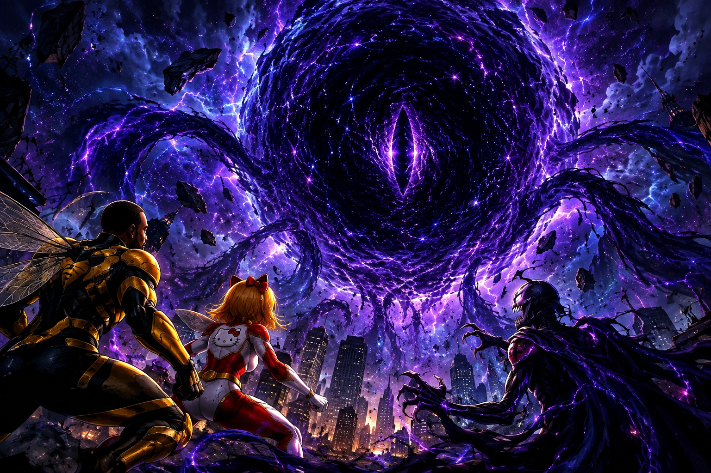

O Vazio
O Vazio: entidade misteriosa pode ser a maior ameaça já enfrentada pelos heróis

Nova Aurora já enfrentou invasões, criaturas gigantes e criminosos extremamente poderosos. Mas nenhum desses acontecimentos preparou a cidade para aquilo que apareceu no céu. O Vazio.
A entidade surgiu sem qualquer aviso. Não houve explosão. Não houve portal detectado pelos sensores. Por aproximadamente oito segundos, simplesmente apareceu uma enorme região escura acima da cidade. Dentro dela havia algo que parecia estar observando os habitantes.
Ninguém sabe o que ele é
Os cientistas de Nova Aurora ainda não conseguiram determinar se O Vazio é uma criatura, uma dimensão ou uma forma de energia desconhecida. Os sensores registraram níveis de energia que ultrapassam qualquer tecnologia conhecida.
Cosmos tentou analisar a entidade diretamente. O resultado foi assustador. Todos os equipamentos utilizados pelo herói foram desligados simultaneamente.
Uma mensagem escondida
Horas depois da batalha, Mega-Bot conseguiu recuperar parte dos dados. Entre os arquivos corrompidos havia uma sequência de números. Quando convertidos, os números formavam uma mensagem:
A frase provocou ainda mais perguntas. Se o Vazio é o primeiro... quantas outras entidades existem?
A teoria mais assustadora
Alguns fãs acreditam que O Vazio não veio para destruir Nova Aurora. Ele teria vindo procurar alguém. E esse alguém pode estar entre os próprios heróis.